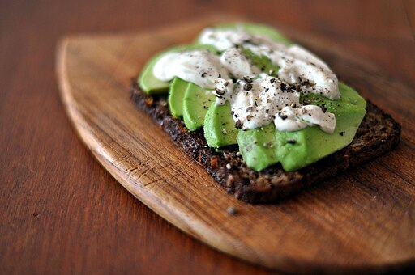

Return to Homepage
Avocado Toast

Avocado sliced onto rye bread
Description
A lovely and nutritious day starter of crunchy toast topped with avocado.
Ingredients
- 1 ripe avocado
- 2 slices of bread (rye or sourdough preferred but any will do)
- Salt & Pepper to taste
- Optional: 1 egg (poached preferred but any will do)
- Optional toppings: Chilli Flakes, Sour Cream, Lemon Juice
Steps
- Toast the bread until crisp.
- Slice the avocado evenly or mash it in a bowl.
- lay the sliced avocado nicely onto the toast or
spread the mashed avocado onto the toast
- sprinkle on any extras/ add egg